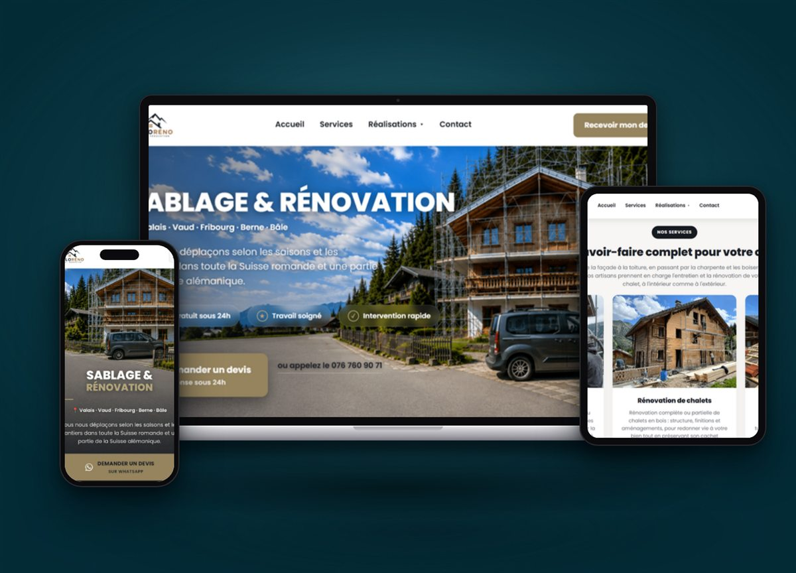

Work / Sabloréno
- Client
- Web design
- Local SEO
- GBP
Search impressions +63% in a single month.
Sabloréno has 13 years of sandblasting and chalet renovation behind it in Conthey, Valais. I built its French-language website in Systeme.io, with service pages built around seasonal local demand, and set up and verified its Google Business Profile.
- ClientSabloréno
- IndustrySandblasting & renovation · Conthey, Valais (CH)
- PlatformSysteme.io
- Live sitesabloreno.ch ↗

01
What I built
- A French-language website with service pages for sandblasting, façades, roofing, carpentry and woodwork — built around what locals search in each season.
- On-page SEO and a verified Google Business Profile with real project photos.
02
Results
+63%impressions in a month (383 → 626)
9 → 20monthly clicks, rising every month
17searches on page 1 · #1 "sablage sion"
8.6%homepage click-through rate
263Business Profile views
150customer interactions — calls, directions, visits
| Before | Now | |
|---|---|---|
| Mobile performance | 58 | 62 |
| Desktop performance | 50 | 60 |
| SEO & Best Practices | 100 | 100 |
03
The proof
04
Honest notes
High-demand searches like "rénovation toiture valais" and "sablage valais" still sit beyond page 2 — the next content push. Mobile load time is the clearest technical priority.
Next case study
Free 30-minute strategy call
Want results like these?
No pitch. A straight read on what's slowing your leads down — and what fixing it would take.